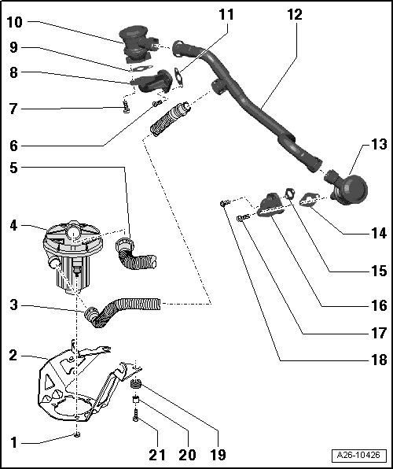

Secondary Air Injection System Assembly Overview
Secondary Air Injection System Assembly Overview

1 Nut, 9 Nm
2 Bracket
• For Secondary Air Injection (AIR) pump motor (V101).
3 Air guide hose
• To air filter housing.
4 Secondary Air Injection (AIR) pump motor (V101)
• At front right in wheel housing below the longitudinal member.
• Removing and installing, refer to --> [ Secondary Air Injection Pump ] Service and Repair.
5 Air guide hose
• To AIR combination valves.
6 Bolt, 9 Nm
7 Bolt, 9 Nm
8 Flange
• For AIR combination valves.
• Cylinder bank 1 (right).
9 Gasket
• Replace
10 Secondary Air Injection (AIR) combination valve
• Cylinder bank 1 (right).
• Checking, refer to --> [ Secondary Air Injection Combination Valve, Checking ] Secondary Air Injection Combination Valve, Checking.
• Removing and installing, refer to --> [ Secondary Air Injection Combination Valve ] Service and Repair.
11 Gasket
• Replace
12 Connecting hose
• To AIR combination valves and AIR pump.
13 Secondary Air Injection (AIR) combination valve
• Cylinder bank 2 (left).
• Checking, refer to --> [ Secondary Air Injection Combination Valve, Checking ] Secondary Air Injection Combination Valve, Checking.
• Removing and installing, refer to --> [ Secondary Air Injection Combination Valve ] Service and Repair.
14 Gasket
• Replace
15 Gasket
• Replace
16 Flange
• For AIR combination valves.
• Cylinder bank 2 (left).
17 Bolt, 9 Nm
18 Bolt, 9 Nm
19 Damping ring
20 Bushing
21 Bolt, 9 Nm
Component Location for AIR Pump Relay (J299)

• In the E-box in plenum chamber.
• Secondary air injection pump relay (J299) - 1 - is inserted in socket "A4".